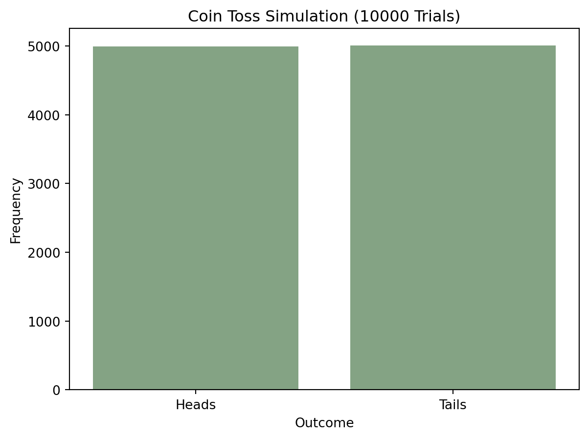
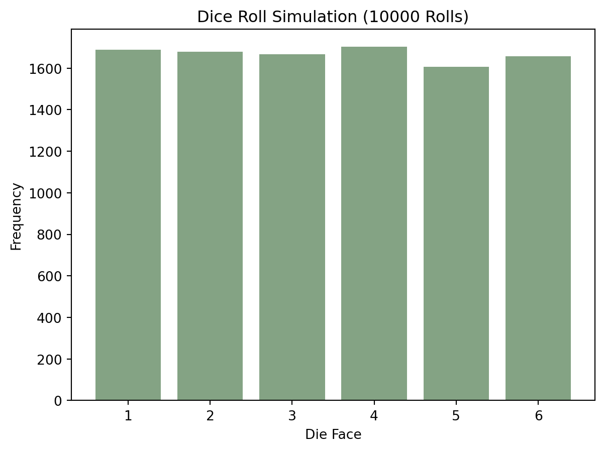

Code
import random
# Simulate a coin toss
outcomes = ['Heads', 'Tails']
result = random.choice(outcomes)
print(f"The coin landed on: {result}")The coin landed on: HeadsHuayu Liang
November 29, 2023
Image from the source: Analytics Yogi: Maximum Likelihood Estimation: Concepts, Examples
Probability theory is the branch of mathematics that deals with uncertainty and randomness. In machine learning, it is crucial for making decisions based on uncertain or incomplete information. Let’s dive into some key concepts.
As a simple example, let’s simulate a coin toss experiment using Python. We’ll use the random module to model the randomness of the outcome.
To visualize the outcome of the coin toss experiment, we can create a bar chart that shows the probabilities of getting ‘Heads’ and ‘Tails’ over multiple trials.
import matplotlib.pyplot as plt
# Simulate multiple coin tosses
trials = 10000
tosses = [random.choice(outcomes) for _ in range(trials)]
# Count the occurrences of 'Heads' and 'Tails'
head_count = tosses.count('Heads')
tail_count = tosses.count('Tails')
# Create a bar chart
plt.bar(outcomes, [head_count, tail_count])
plt.xlabel('Outcome')
plt.ylabel('Frequency')
plt.title(f'Coin Toss Simulation ({trials} Trials)')
plt.show()
This bar chart visualizes the frequencies of ‘Heads’ and ‘Tails’ outcomes over 10000 coin toss trials.
In probability theory, a random variable is a variable whose values depend on the outcome of a random experiment. Let’s explore a discrete random variable.
We’ll simulate the roll of a fair six-sided die and visualize the probability distribution of its outcomes.
# Simulate multiple dice rolls
rolls = [random.choice(die_faces) for _ in range(trials)]
# Count the occurrences of each face
face_counts = [rolls.count(face) for face in die_faces]
# Create a bar chart
plt.bar(die_faces, face_counts)
plt.xlabel('Die Face')
plt.ylabel('Frequency')
plt.title(f'Dice Roll Simulation ({trials} Rolls)')
plt.show()
This bar chart shows the probability distribution of a fair six-sided die’s outcomes over 1000 rolls.
Probability theory and random variables are foundational concepts in machine learning that help us deal with uncertainty and randomness. In this blog post, we explored these concepts through simple simulations of coin tosses and dice rolls in Python. Visualizations played a crucial role in understanding the probability distributions of these experiments.
Understanding probability theory and random variables is essential for various machine learning algorithms, such as Bayesian networks, decision trees, and more. Experiment with different simulations and visualizations to deepen your grasp of these concepts.
---
title: "Probability Theory and Random Variables"
author: "Huayu Liang"
date: "now"
categories: [ML, visualization, probability theory]
image: "probability.png"
---
Image from the source: [Analytics Yogi: Maximum Likelihood Estimation: Concepts, Examples](https://vitalflux.com/maximum-likelihood-estimation-concepts-examples/)
# Exploring Probability Theory and Random Variables with Python
## Probability Theory
Probability theory is the branch of mathematics that deals with uncertainty and randomness. In machine learning, it is crucial for making decisions based on uncertain or incomplete information. Let's dive into some key concepts.
### **Coin Toss Simulation**
As a simple example, let's simulate a coin toss experiment using Python. We'll use the **`random`** module to model the randomness of the outcome.
```{python}
import random
# Simulate a coin toss
outcomes = ['Heads', 'Tails']
result = random.choice(outcomes)
print(f"The coin landed on: {result}")
```
### **Visualizing a Coin Toss**
To visualize the outcome of the coin toss experiment, we can create a bar chart that shows the probabilities of getting 'Heads' and 'Tails' over multiple trials.
```{python}
import matplotlib.pyplot as plt
# Simulate multiple coin tosses
trials = 10000
tosses = [random.choice(outcomes) for _ in range(trials)]
# Count the occurrences of 'Heads' and 'Tails'
head_count = tosses.count('Heads')
tail_count = tosses.count('Tails')
# Create a bar chart
plt.bar(outcomes, [head_count, tail_count])
plt.xlabel('Outcome')
plt.ylabel('Frequency')
plt.title(f'Coin Toss Simulation ({trials} Trials)')
plt.show()
```
This bar chart visualizes the frequencies of 'Heads' and 'Tails' outcomes over 10000 coin toss trials.
## Random Variables
In probability theory, a random variable is a variable whose values depend on the outcome of a random experiment. Let's explore a discrete random variable.
### **Dice Roll Simulation**
We'll simulate the roll of a fair six-sided die and visualize the probability distribution of its outcomes.
```{python}
# Simulate a dice roll
die_faces = [1, 2, 3, 4, 5, 6]
result = random.choice(die_faces)
print(f"The die shows: {result}")
```
### **Visualizing a Dice Roll**
```{python}
# Simulate multiple dice rolls
rolls = [random.choice(die_faces) for _ in range(trials)]
# Count the occurrences of each face
face_counts = [rolls.count(face) for face in die_faces]
# Create a bar chart
plt.bar(die_faces, face_counts)
plt.xlabel('Die Face')
plt.ylabel('Frequency')
plt.title(f'Dice Roll Simulation ({trials} Rolls)')
plt.show()
```
This bar chart shows the probability distribution of a fair six-sided die's outcomes over 1000 rolls.
## Conclusion
Probability theory and random variables are foundational concepts in machine learning that help us deal with uncertainty and randomness. In this blog post, we explored these concepts through simple simulations of coin tosses and dice rolls in Python. Visualizations played a crucial role in understanding the probability distributions of these experiments.
Understanding probability theory and random variables is essential for various machine learning algorithms, such as Bayesian networks, decision trees, and more. Experiment with different simulations and visualizations to deepen your grasp of these concepts.